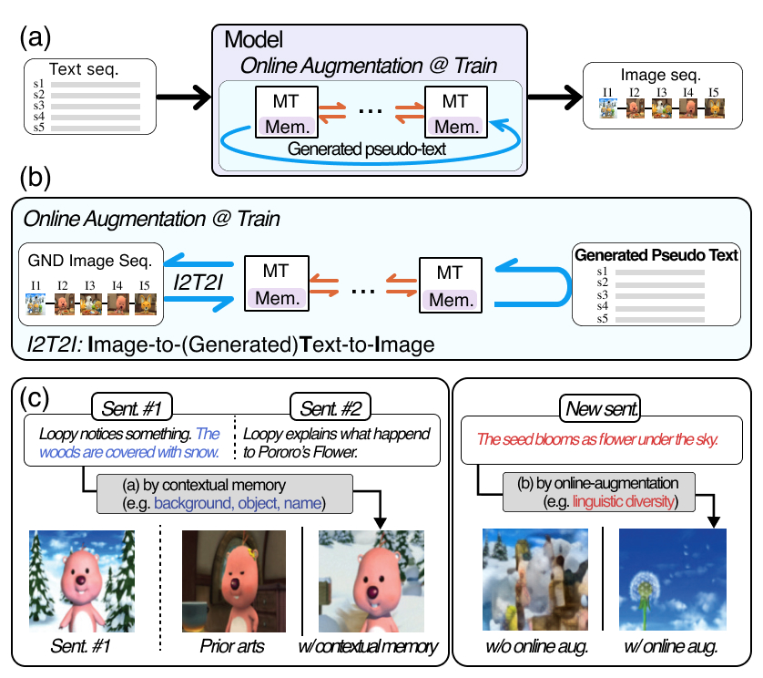

|
I'm a second-year Ph.D. student at Vision and Learning Lab. at Yonsei University advised by Prof. Jonghyun Choi. My research focus is on multi-modal (specifically, vision-language) understanding and generation. During my M.S. at GIST, I was fortunate to work as a research intern at the LG AI Research (2021-2022). Currently, I'm looking for an internship in vision-language research. I received a M.S. degree from Gwangju Institute of Science and Technology under the supervision of Prof. Jonghyun Choi and a B.S. degree with first-class honours from Ajou University under the supervision of Prof. Sangin Kim. Email / Google Scholar / Semantic Scholar / DBLP / Github |
|  |
Daechul Ahn , Daneul Kim , Gwangmo Song , Seung Hwan Kim , Honglak Lee , Dongyeop Kang , Jonghyun Choi ICCV 2023 [paper] [bibtex] |

|
Jinwoo Nam* , Daechul Ahn* , Dongyeop Kang , Seong Jong Ha , Jonghyun Choi ICCV 2021 [paper] [bibtex] [code] |
-
Computer vision Best Paper Award at the 1st Yonsei AI Workshop @ Oct 2022
Reviewer
- CVPR, ICCV, AAAI, WACV
|
This template is from Jon Barron. |